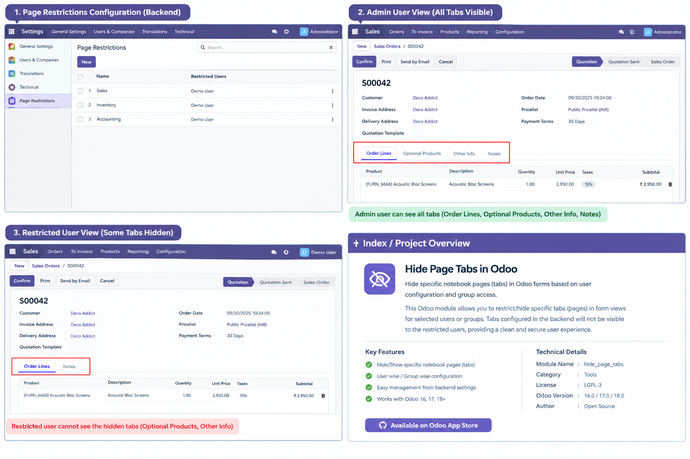

Page Visibility Management
Configure which named notebook pages should be hidden from selected users in supported Odoo forms.
Keep the Odoo interface focused by configuring which form pages (tabs) are visible to selected users. Tailor the interface to different responsibilities and business needs with centrally managed restrictions.
See the page restriction configuration, the administrator view, and an example of the restricted-user form view.

Configure which named notebook pages should be hidden from selected users in supported Odoo forms.
Associate page restrictions with user accounts to tailor the interface to their responsibilities.
Manage page restriction records from a dedicated backend configuration menu.
Use Odoo backend assets and server-side configuration endpoints to supply page visibility settings to the interface.
| Module Name | Hide Pages for Users |
| Technical Name | hide_page_user |
| Dependencies | base, web |
| Publisher | SkNovaGlobal |
| Supported Odoo Versions | Confirm compatibility against the versions tested with your module before publishing. |
| License / Version | Use the license and version declared in your module manifest. |
The exact menu labels and configuration fields depend on the final implementation packaged with the module.
SkNovaGlobal helps businesses streamline operations with Odoo implementation, customization, integrations, and ongoing technical support.
Please verify that the website and email above are your official support contacts before publishing.